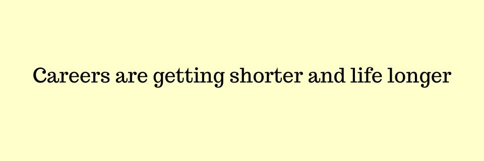
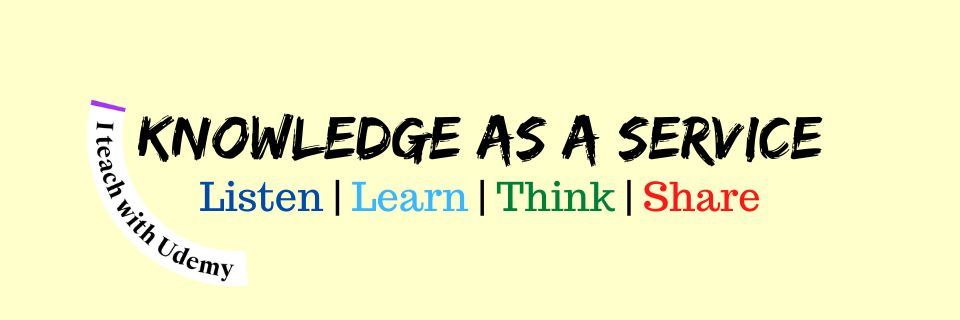
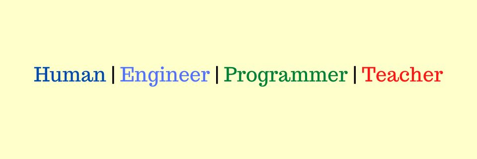
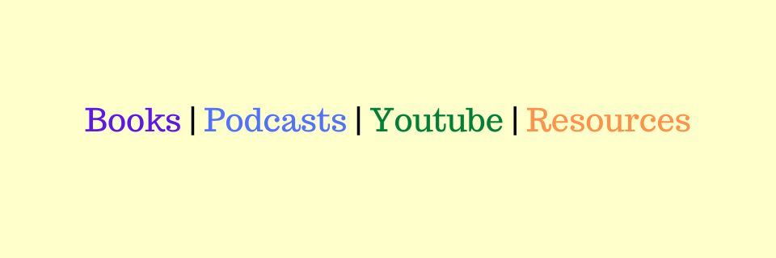

Intro

Why I Teach
We live in a paradox: careers are getting shorter, yet life is getting longer. The traditional arc of education, work, and retirement is fracturing—and fast. In this new reality, learning isn’t just important, it’s urgent.
But today’s learners face a difficult landscape. The rise of algorithm-driven content, marketing hype, and shallow tutorials has made meaningful, targeted learning harder than ever. Ads sell shortcuts, influencers peddle noise, and critical skills get buried under trends. The result? Wasted time, stalled careers, and missed opportunities.
My mission is to cut through that chaos.
I teach with one goal: to help professionals recognize what truly matters, master it with focus, and build durable, burnout-resistant careers. I believe in last-mile-first learning—practical, context-aware guidance designed for those with limited time and high stakes.
And now, with the advent of AI accelerating obsolescence across industries, that clarity is not a luxury—it’s survival.
This space exists for those who want to reclaim control of their learning, align it with real-world impact, and grow with confidence in a fast-changing world.
Welcome to RougeNeuron Academy.
Udemy Courses

Courses on Udemy to help students learn in a time tested enviroment with purchase parity pricing and stable refund policies.
About

I’m a software engineer with over 18 years of experience translating complex engineering challenges into practical,
performance-oriented solutions. With an academic foundation in Electrical Engineering and a thesis in Statistical
Signal Processing, I’ve led teams, shipped scalable systems, and architected high-impact tools across startups and
enterprise environments.
Throughout my career—from building low-level system modules and distributed data platforms to leading R&D in
performance optimization and observability—I’ve remained focused on delivering end-user value while minimizing
technical debt. My approach blends deep technical skill across C++, Python, Scala, and cloud platforms (AWS, Azure)
with strategic thinking, enabling products to scale efficiently without compromising stability or developer
experience.
Today, I’m also passionate about mentoring and knowledge-sharing through writing, teaching, and course creation. My
work helps developers around the world understand software not just as code, but as a long-term business and career
endeavor.
I’m also a lifelong learner, with a passion for exploring new technologies, languages, and methodologies. Collection of my writings can be found on Gumroad
Resources

Recent reads
Leviathan by Thomas Hobbes, 1651 [Non Fiction]
Wellness by Nathan Hill, 2023 [Fiction]
Rebulic by Plato, 375 BC [Non-Fiction]
What went wrong with capitalism by Ruchir Sharma, 2024 [Non-fiction]
Podcasts
- Pivot (hosted by Kara Swisher & Scott Galloway)
- Hard Fork (hosted by Kevin Roose and Casey Newton )
- Empire (hosted by Anita Anand and William Dalrymple)
- Rest is history (hosted by Tom Holland and Dominic Sandbrook)
- Rest is politics (hosted by Alastair Campbell and Rory Stewart)
- Vergecast (hosted by Nilay Patel, David Pierce, and Alex Cranz)
Check out the full list of 300+ recommendations